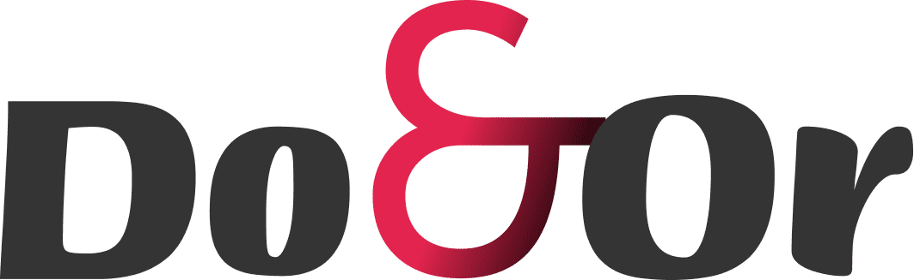
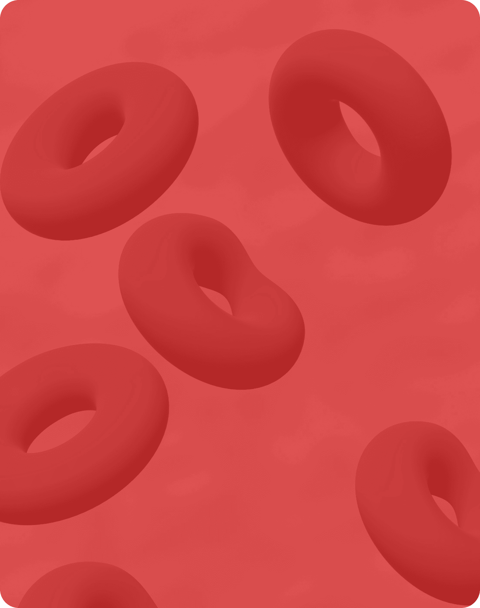
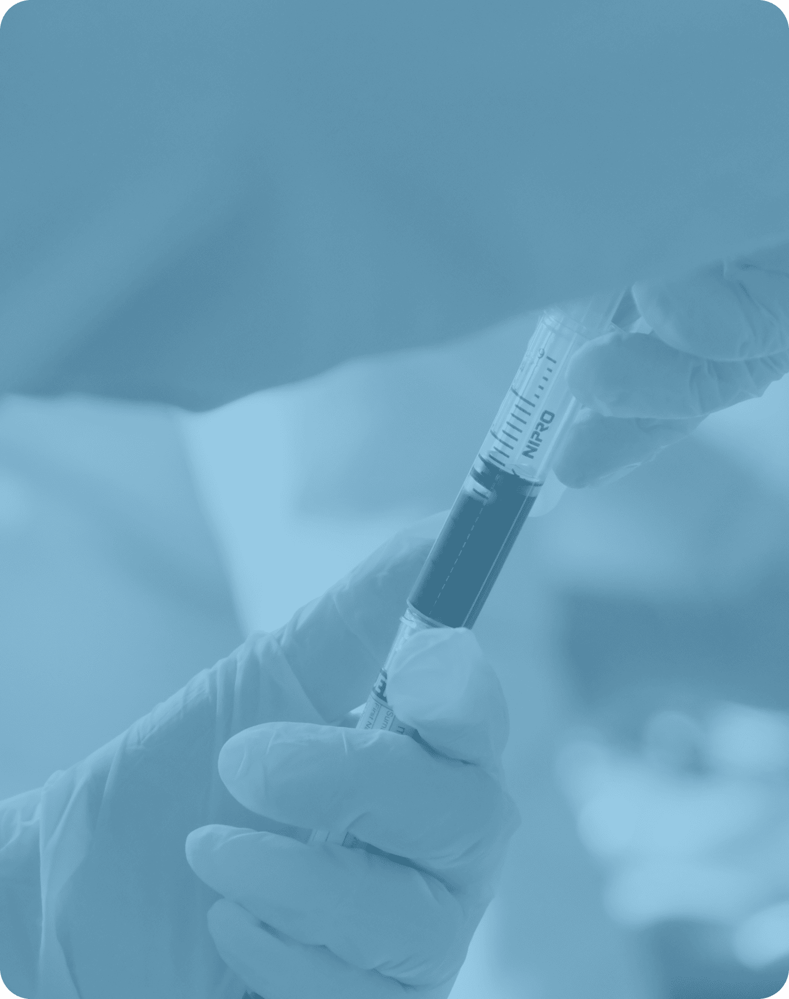
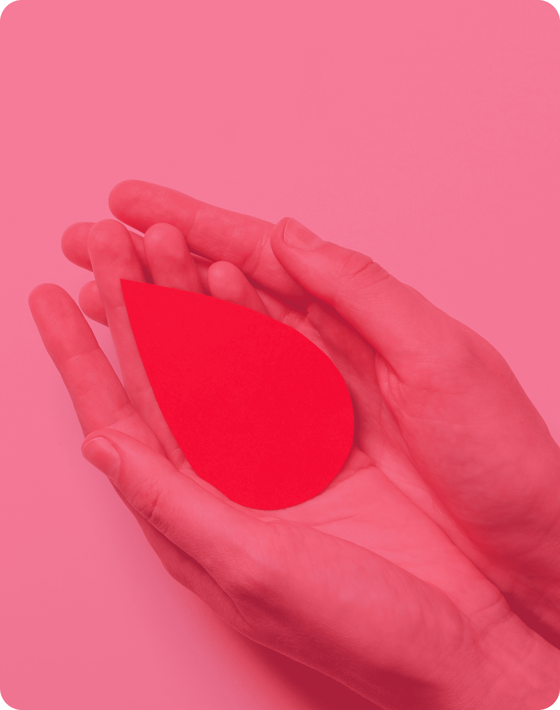

Do&Or은 헌혈의 중요성을 알리기 위해 시작했습니다.

헌혈(Blood Dontaion)의 기증자(Donor)를 뜻하는 단어에
“Do&Or”이라는 새로운 의미를 담았습니다. 헌혈의 중요성을 알리는 캠페인 확산에 보탬이 되어 달라는 사회공헌적
의미를 담고 있습니다. 직접 헌혈에 참여하시는 분 뿐만 아니라 헌혈의
중요성을 함께 알리는 분들과 다양한 방식으로 사회에 기여할 수 있는
방법을 고민하고 있습니다.
“Do&Or”이라는 새로운 의미를 담았습니다. 헌혈의 중요성을 알리는 캠페인 확산에 보탬이 되어 달라는 사회공헌적
의미를 담고 있습니다. 직접 헌혈에 참여하시는 분 뿐만 아니라 헌혈의
중요성을 함께 알리는 분들과 다양한 방식으로 사회에 기여할 수 있는
방법을 고민하고 있습니다.
캠페인 개최 현황
2025년

혈액은
인공적인 물질로
대체할 수 없어요.
인공적인 물질로
대체할 수 없어요.

혈액은
장기보관이 어려워
적정 보유량을
확보해야 해요.
장기보관이 어려워
적정 보유량을
확보해야 해요.

혈액은
윤리적 문제로
상업적 유통이 불가해요.
윤리적 문제로
상업적 유통이 불가해요.